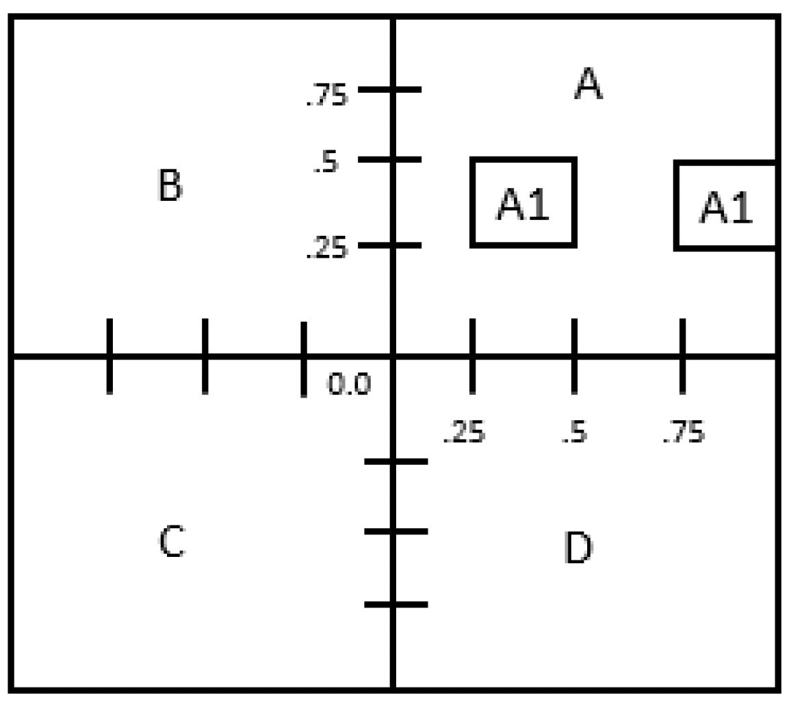
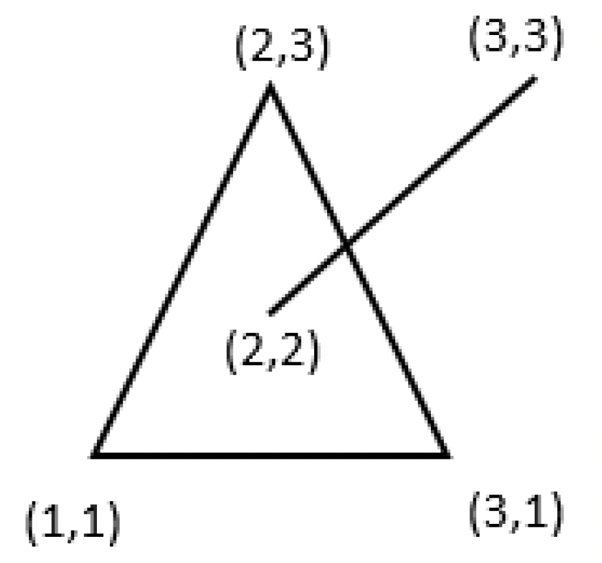

A student has written a function classify that takes a point (x,y) and displays the name of the region where that point falls according to the following diagram:

For example, if the point is x = -0.5, and y = -0.5 then this function displays ‘C’ because the point falls in the region C.
For example, if the point is x = 0.3, and y = 0.3 then this function displays ‘A1’ because the point falls in one of the regions A1. ‘A’ does not need to be displayed in that case.
Finally, consider a value of zero to be positive (or non-negative).
On the following page is the code the student has written, but it does not work. Help the student by fixing his or her code to make it correct. Each print statement is correct, but you need to verify that each if condition is correct. You must fix all the errors (write the corrected line below the incorrect condition.).
def classify(x, y):
"""
This function prints the classification of the point (x,y) according to regions on a known map.
Input: x,y coordinates of a point in the range [-1,1]
Output: None. Print the region where the point falls:
A, A1, B, C, D
"""
if (x >= 0) and (y >= 0): # Test for A
if (x >= .25 and x <= .50) and (y >= 0.25 and y >= 0.50):
print('A1')
elif (x >= .75 and x <= .75) and (y >= 0.25 or y <= 0.50):
print('A1')
else:
print('A')
elif (x < 0) or (y >= 0): # Test for B
print('B')
elif (x < 0) and (x < 0): # Test for C
print('C')
else: # Test for D
print('D')
# Example usage
classify(-0.5, -0.5)
Write a function triplerandi that generates three different random numbers within a given range [low, high]. You can assume that the [low, high] range spans at least three integers.
For example, triplerandi(1, 10) could generate values of n1=5, n2=10, n3=4 because they are all different and within the range [1, 10]. The function will not output values such as n1=4, n2=6, n3=4; because n1 and n3 are equal.
Note: The Python function random.randint(a, b) generates a random integer N where a ≤ N ≤ b.
Your triplerandi function should utilize random.randint to ensure each number generated is within the specified low to high range, and should ensure that each number is unique within the set of three numbers generated.
Write a Python function named sum_large_per_column that computes a special sum for each column of a matrix (a 2-dimensional list). This sum should only include values in the column that are greater than or equal to 100, or less than or equal to -100. The results should be stored in a list called new_list, where the sum of the first column is in the first position, the sum for the second column is in the second position, and so on. Use for loops to iterate over the matrix elements and calculate the sums. Make sure to include comments in your code to explain the steps you take.
Given the matrix:
101 -9 718
-3 12 0
23 -500 1
109 55 -20
-22 33 -140
The function sum_large_per_column should return the list:
[210, -500, 578]
Begin your function with the following line, then complete the function according to the specifications:
def sum_large_per_column(a_matrix):
# Your code here
You are given a Python function check_intersection that calculates whether or not two line segments intersect. You will use this function to write another function, poly_intersect, which checks for intersections between a given line segment and any of the line segments of a given convex polygon.
The provided function check_intersection is defined as:
def check_intersection(pt1x, pt1y, pt2x, pt2y, pt3x, pt3y, pt4x, pt4y):
# Determines if two line segments intersect
# Returns True if they intersect, False otherwise
Using the check_intersection function, write the poly_intersect function. This function should check to see if there is an intersection between any given line segment and any of the line segments of a given convex polygon.
Consider a convex polygon defined by its vertices in order:
poly = [
[1, 1],
[3, 1],
[2, 3]
]
and a line segment lseg = [2, 2, 3, 3]. If any of the polygon’s line segments intersect with the given line segment lseg, poly_intersect should return True.

poly_intersectStart your function with the following line, then complete the function according to the specifications:
def poly_intersect(poly, lseg):
# Your code to check intersection with polygon's line segments